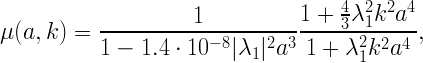
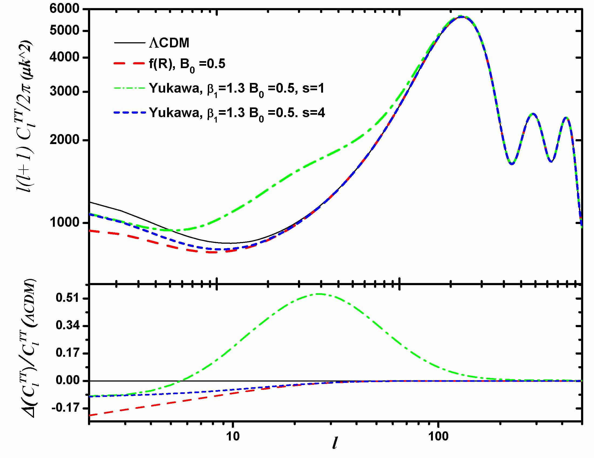
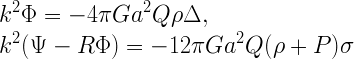
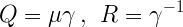
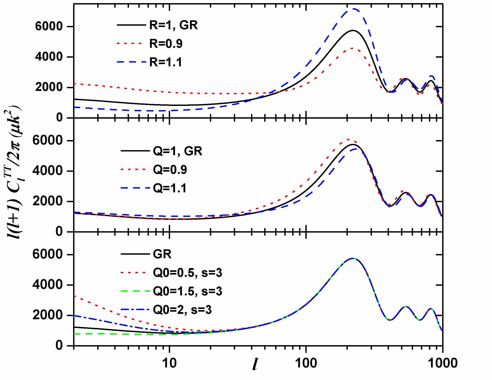
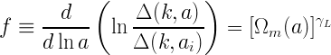
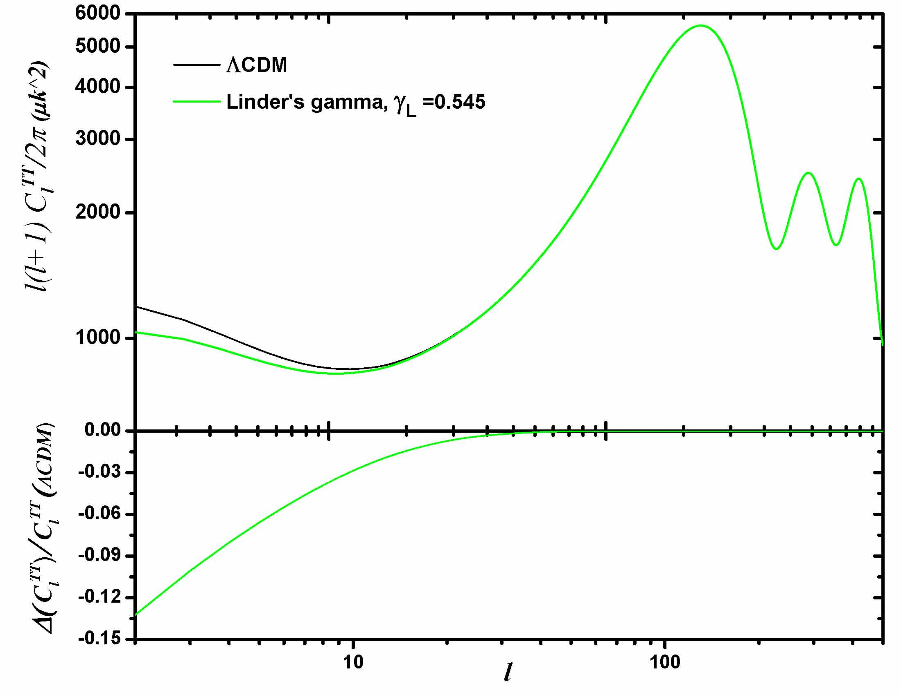

Parametrizations implemented in MGCAMB
- f(R): Setting β1 = 4/3, λ22 = β1 λ12 and &beta2 = 1/2 and

where λ12 = B0 c2 /(2H0 ) would describe f(R) models for B0 < 1
as explained in arXiv:0909.2045.
- Chameleon (Yukawa-type dark matter interaction): It is an
extension to Chameleon models introduced above. Setting
λ22 = β1 λ12
, β2 = 2/β1 -1 with 0 < B0 < 1, 0 < β1 < 2 and 1
< s < 4 gives the chameleon models considered in arXiv:0909.2045.

- Bean and Tangmatitham parametrization arXiv:1002.4197:
The parametrization is

where for late times, when anisotropic stress is small, we have

The plot below shows some of the results for particular forms of Q(k,a)
and R(k,a) from their paper.

- Linder's γ parametrization ( γL): This is a commonly used
parameter defined as arXiv:0701317

where the scale dependence is neglected. Below is an example of MGCAMB
output for a particular choice of the parameter.
